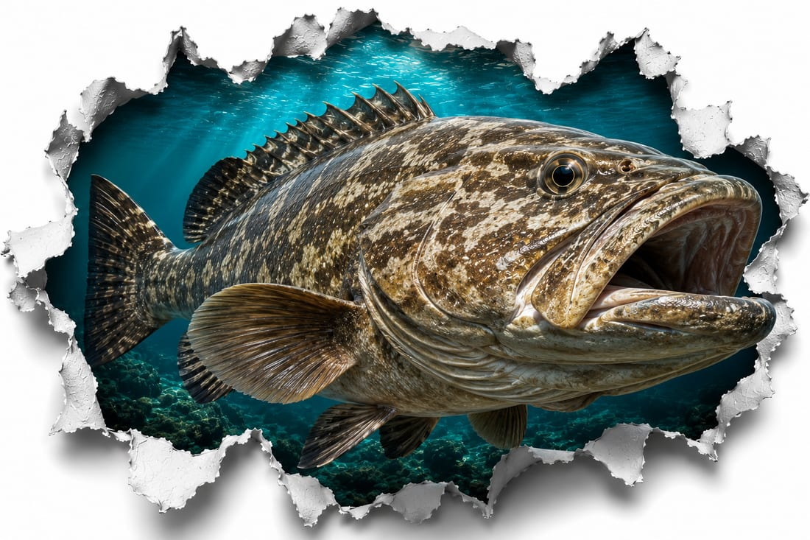

MeroGrouper
Temporada picoPeak season
May–dic (la veda la fija FWC)May–Dec (closure set by FWC)ZonaZone
Pecios y arrecifes en ~100–200 piesWrecks and reefs at ~100–200 ftMejor horaBest time
FlexibleFlexibleTipo de salidaTrip type
Salida de arrecife / fondoReef / bottom tripCómo se pescaHow it is fished
Pesca de fondo pegada a la estructura con knocker rig. Se ancla contra la corriente para que la carnada derive natural hacia el pecio, y se hace un set rápido para sacar al mero de su cueva antes de que te enrede en el fondo.Bottom fishing tight to structure with a knocker rig. You anchor up-current so the bait drifts naturally toward the wreck, and you set hard and fast to pull the grouper out of its hole before it rocks you up.
Carnada y equipoBait & tackle
Carnada: pinfish vivo y threadfin; plomada de 4–8 oz. Equipo (rangos): caña 6–7' medio-pesada, carrete 6000–8000, braid 50–80 lb, líder 60–100 lb; anzuelos circle 6/0–9/0 (en negros grandes, 8/0–10/0 reforzado para que no se enderece).Bait: live pinfish and threadfin; 4–8 oz sinker. Tackle (ranges): 6–7' medium-heavy rod, 6000–8000 reel, 50–80 lb braid, 60–100 lb leader; circle hooks 6/0–9/0 (for big blacks, 8/0–10/0 forged so they will not straighten).
Dónde en MiamiWhere in Miami
Sobre pecios y arrecife offshore frente a Miami.Over offshore wrecks and reef off Miami.
Antes de quedarte unoBefore you keep one
Tallas, vedas y límites los fija FWC y cambian. Consulta la fuente oficial antes de salir: Regulaciones recreativas de agua salada de FWC y la app Fish Rules. En charter, tu capitán te guía sobre qué se queda y qué se suelta. La temporada y veda de mero las fija FWC y varían por especie y zona. Verifica antes de salir.Sizes, closures and limits are set by FWC and change. Check the official source before heading out: FWC saltwater recreational regulations and the Fish Rules app. On a charter, your captain guides you on what to keep and what to release. Grouper season and closures are set by FWC and vary by species and area. Verify before heading out.
¿Llevas clientes a pescar mero en Miami? Aparece en la guía →Take clients out for grouper in Miami? Get listed in the guide →